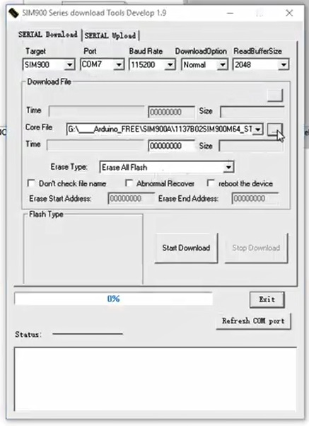
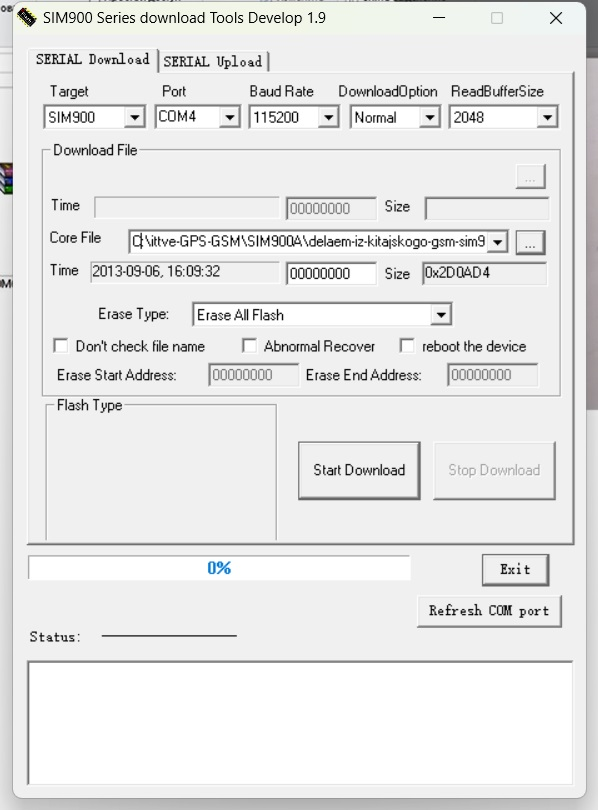
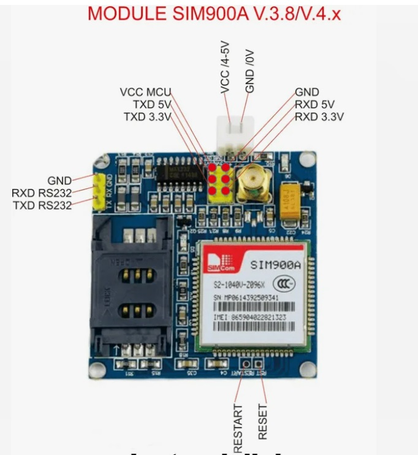
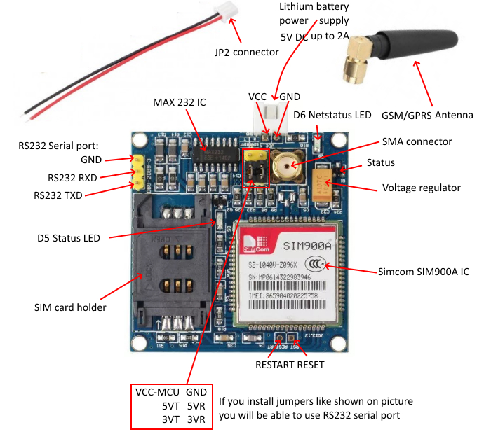
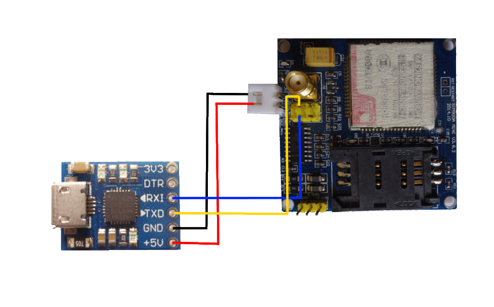

SIM900A SIM900 MINI V4.0 беспроводной модуль передачи данных GSM GPRS комплект платы с антенной C83, получен от AliExpress 7 сентября 2023
Видео о том, как купив дешевый модуль SIM900A, сделать из него полноценный SIM900 и даже с расширенными возможностями как DTMF декодинг, пользовательские аудиофайлы на рингтоны, и прочие плюшки. Понадобится сам модуль на SIM900A и USB-TTL конвертер. Почему SIM900, а не SIM800L? Ответ прост - уж больно много проблем у ВАС возникает при работе с SIM800L и к тому же GPRS гораздо стабильнее на SIM900
Прошивка и программа для прошивки тут: https://yadi.sk/d/vwWr2ODi3EEb5J
годится не каждый SIM900A, а ОБЯЗАТЕЛЬНО с 64МБ памяти, ссылка именно на него ниже
SIM900A 64МБ http://ali.pub/guqyh USB TTL конвертер PL2303 http://ali.pub/8dctg
Наша группа вконтакте: https://vk.com/arduino_nodemcu_esp8266


После прошивки перегружаем модем, ждем, когда он будет готов (смотрим через com-порт ардуино) и проверяем модем следующими командами:
AT => OK
AT+IPR=? => +IPR: (),(0,1200,2400,4800,9600,19200,38400,57600,115200) OK
AT+GMR => Revision:1137B02SIM900M64_ST_ENHANCE OK - файл прошивки
2024-05-27 Получилось!



+5V от блока питания на 18650 => VCC/4-5V на SIM900a
GND от блока питания на 18650 => GND/0V на SIM900a
TXD от USB UART => RXD 5V на SIM900a
RXD от USB UART => TXD 5V на SIM900a
GND от USB UART => GND при контактах 5V на SIM900aПроверил работу светодиодных индикаторов. После подключения питания загорелся индикатор состояния D5 Status LED, а индикатор D6 Netstatus LED начал мигать каждые 800 мс, пока не была найдена сеть. После обнаружения сети индикатор D6 Netstatus LED начал мигать каждые три секунды.
Сделал подключение SIM900a к Terminal-v1.9b на основе статьи GSM модуль SIM900A. Прошивка и использование
Установил частоту передачи 9600 Baud rate и поставил галочку +CR для автоматического формирования “возврата каретки” и подсоединился к SIM900a.
Ранее, работая c SIM900 через IDE Arduino, думал, что плата не работает, так как через последовательный порт видел только “эхо” - повторение вводимых строк после нажатия “enter”. Теперь понятно - не уходил в порт “возврат каретки”.
----- Проверить связь:
команда - AT
---
ответ - OK
----- Получить идентификатор прошивки:
AT+GMR
---
Revision:1137B02SIM900M64_ST_ENHANCE
OK
----- Узнать IMEI?:
AT+GSN
---
012207000000015
OK
----- Определить состояние:
AT+CPAS
---
+CPAS: 0 - готов к работе
OK
----- Получить список операторов, присутствующих в сети (получение списка делается не быстро. Нужно подождать)
AT+COPS=?
---
+COPS: (2,"MTS RUS","MTS RUS","25001"),(1,"Beeline","Beeline","25099"),(1,"MegaFon RUS","MegaFon","25002"),,(0,1,4),(0,1,2)
OK
----- Получить информацию об операторе:
AT+COPS?
---
+COPS: 0,0,"MTS RUS"
OK
----- Выполнить звонок:
ATD+79214524295;
OK
----- Определить состояние:
AT+CPAS
---
+CPAS: 4 - голосовое соединение
OK
----- Завершить вызов:
ATH0
---
OK
----- Определить состояние:
AT+CPAS
---
+CPAS: 0
OK
----- Получить список поддерживаемых скоростей передачи данных:
AT+IPR=?
---
+IPR: (),(0,1200,2400,4800,9600,19200,38400,57600,115200)
OK
----- Получить отчёт о состоянии вставленной SIM-карты
AT+CSMINS
---
ERROR
AT+CSMINS=?
---
+CSMINS: (0-1)
OK
----- Получить отчёт о качестве сигнала оператора сети
Возвращает значение уровня сигнала <rssi> и
коэффициент битовых ошибок канала <ber>
Команда: AT+CSQ
Ответ: +CSQ: <rssi>,<ber>
Значение RSSI дБм Состояние
-----------------------------------
2 -109 Маргинальный
3 -107 Маргинальный
4 -105 Маргинальный
5 -103 Маргинальный
6 -101 Маргинальный
7 -99 Маргинальный
8 -97 Маргинальный
9 -95 Маргинальный
10 -93 ОК
11 -91 ОК
12 -89 ОК
13 -87 ОК
14 -85 ОК
15 -83 Хорошо
16 -81 Хорошо
17 -79 Хорошо
18 -77 Хорошо
19 -75 Хорошо
20 -73 Превосходно
21 -71 Превосходно
22 -69 Превосходно
23 -67 Превосходно
24 -65 Превосходно
25 -63 Превосходно
26 -61 Превосходно
27 -59 Превосходно
28 -57 Превосходно
29 -55 Превосходно
30 -53 Превосходно
AT+CSQ
---
+CSQ: 28,0
OKСсылки:
https://petterhj.no/notes/electronics/modules/sim900a/
https://www.espruino.com/datasheets/SIM900_AT.pdf
https://m2msupport.net/m2msupport/at-command/
TO CHECK THE MODEM:
---------------------------------------------------
AT
OK
TO CHANGE SMS SENDING MODE:
---------------------------------------------------
AT+CMGF=1
OK
TO SEND NEW SMS:
---------------------------------------------------
AT+CMGS="MOBILE NO."
<MESSAGE
{CTRL+Z}
ПРЕДПОЧТИТЕЛЬНОЕ ХРАНЕНИЕ SMS-СООБЩЕНИЙ:
---------------------------------------------------
AT+CPMS=?
+CPMS: ("SM"),("SM"),("SM")
OK
AT+CPMS?
+CPMS: "SM",19,30,"SM",19,30,"SM",19,30
TO MAKE A VOICE CALL:
---------------------------------------------------
ATD9876543210;
TO REDIAL LAST NO:
---------------------------------------------------
ATDL
ДЛЯ ПРИЕМА ВХОДЯЩЕГО ВЫЗОВА:
---------------------------------------------------
ATA
ЧТОБЫ ПОВЕСИТЬ ТРУБКУ ИЛИ ПРЕРВАТЬ ВЫЗОВ:
---------------------------------------------------
ATH
ЧТОБЫ УСТАНОВИТЬ CКОРОСТЬ ПЕРЕДАЧИ ДАННЫХ В БОДАХ:
---------------------------------------------------
AT+IPR=? {Просмотреть значения скорости передачи данных в бодах}
AT+IPR=0 {Перевести модем в режим автоподачи звука}
ВЫБОР ОПЕРАТОРА:
---------------------------------------------------
AT+COPS=?
OK
AT+COPS?
+COPS: 0,0,"AirTel"
OK
УСТАНОВИТЕ КОДЫ СОТОВОЙ СВЯЗИ ДЛЯ ИНДИКАЦИИ ВХОДЯЩИХ ВЫЗОВОВ:
---------------------------------------------------
AT+CRC=?
+CRC: (0-1)
OK
AT+CRC?
+CRC: 0
OK
AT+CRC=1
OK
??? +CRING: VOICE
READ OPERATOR NAMES:
---------------------------------------------------
AT+COPN=?
OK
AT+COPN
+COPN: "472001","DHIMOBILE"
+COPN: "60500
+COPN: "502012","maxis mobile"
+COPN:
+COPN: "502013","TMTOUCH"
+COPN
+COPN: "502016","DiGi"
+COPN: "502017","TIMECel""
+COPN: "502019","CELCOM GSM"
GPRS COMMANDS:
---------------------------------------------------
Command Description
AT+CGATT ПОДКЛЮЧЕНИЕ/ОТКЛЮЧЕНИЕ ОТ УСЛУГИ GPRS
AT+CGDCONT DEFINE PDP CONTEXT
AT+CGQMIN ПРОФИЛЬ КАЧЕСТВА ОБСЛУЖИВАНИЯ (МИНИМАЛЬНЫЙ)
AT+CGQREQ ПРОФИЛЬ КАЧЕСТВА ОБСЛУЖИВАНИЯ (ПО ЗАПРОСУ)
AT+CGACT PDP CONTEXT ACTIVATE OR DEACTIVATE
AT+CGDATA ENTER DATA STATE
AT+CGPADDR SHOW PDP ADDRESS
AT+CGCLASS GPRS MOBILE STATION CLASS
AT+CGEREP КОНТРОЛИРОВАТЬ НЕЖЕЛАТЕЛЬНЫЕ СОБЫТИЯ GPRS
AT+CGREG NETWORK REGISTRATION STATUS
AT+CGSMS SELECT SERVICE FOR MO SMS MESSAGES
AT+CGCOUNT СЧЕТЧИКИ GPRS-ПАКЕТОВ
2024-05-26 Поработал со статьей, sim900a живой, команды подтверждает, но звонок и смс на мой номер ушли “в никуда”.
2024-05-26 Просмотрел, ничего не делал
Гость 1 - 07.02.2014 - 09:34 Разобрался. В общем, в результате экспериментов получилось его реанимировать и теперь он работает как полноценный SIM900 с прошивкой All-in-One (ENHANCE). Аппаратная версия моего модуля S2-1040V-Z095R (64Mb). Нужно в “SIM900 Series download Tools Develop 1.9” открыть файл прошивки, выбрать СОМ-порт, “Erase Type” установить в “Erase All Flash”, присоединится к модулю через интерфейс “DEBUG”, подать питание и нажать POWERKEY. По ссылка ниже можно найти программу для прошивки и сами прошивки (32Mb и 64Mb): http://gauthierlerouzic.blogspot.ru/…/label/SIM900A А здесь лежит прошивка ENHANCE: ftp://ftp.macrogroup.ru/Support/SimC…Sim900/Sim900/ Спасибо всем ответившим ))
Гость 2 - 09.02.2014 - 20:54 Хочешь сделать дело хорошо- делай сам!